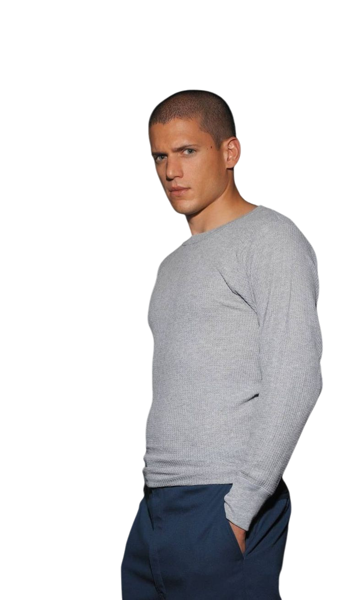

•Maicon Scofield
Um engenheiro estrutural brilhante que planeja
cuidadosamente a fuga da prisão para salvar seu irmão.
Um engenheiro estrutural brilhante que planeja
cuidadosamente a fuga da prisão para salvar seu irmão.
Lincoln é o irmão de Maicon que enfrenta acusações
falsas e demonstra grande força física e emocional.
Sara é uma médica compassiva que se torna
peça-chave na fuga e no romance com Michael.
T-Bag é um dos detentos mais perigosos e
imprevisíveis, com moral duvidosa.

Sucre é um amigo fiel a Michael e
motivado por seu amor por Maricruz.
C-Note busca justiça e quer proteger
sua família a qualquer custo.
Mahone é um agente do FBI com grande inteligência,
mas atormentado por seu passado.
Kellerman começa como um vilão, mas
mostra um lado mais complexo ao longo da série.

Abruzzi é um chefão da máfia que faz parte
do plano de fuga para retomar seu poder.
Um chefe de segurança autoritário e cruel,
que se torna vulnerável e busca redenção ao longo da série.